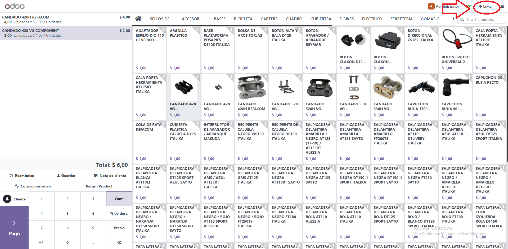
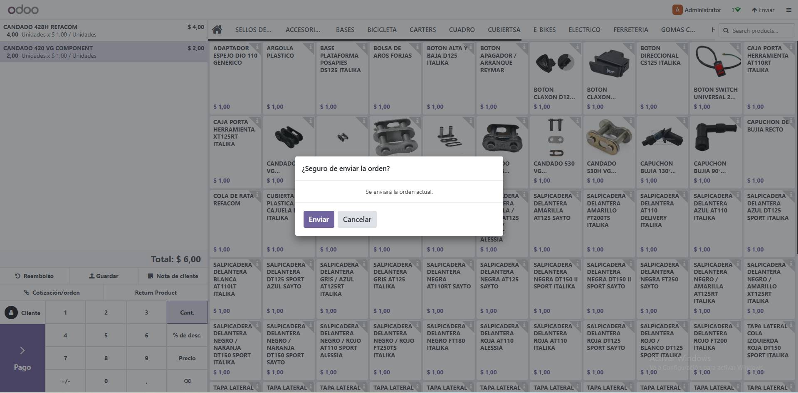
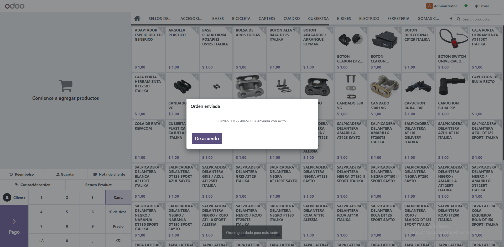

Agrega un boton Enviar en la barra superior del POS que usa la logica nativa de guardar: valida pedidos vacios, confirma antes de enviar y muestra el número de recibo tal como lo entrega el core.

Si el pedido tiene lineas, muestra un ConfirmPopup con opciones Cancelar y Enviar. Si esta vacio, informa al usuario sin guardar.

Al finalizar, reutiliza el numero de recibo del core y lo muestra en un popup informativo.
